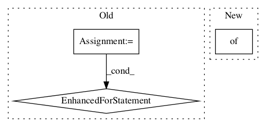

1c75176947730de8322acf6ad996096625e92e3a,tensorflow_lattice/python/rtl_layer.py,RTL,call,#RTL#Any#,217
Before Change
for input_key in sorted(x.keys()):
items = x[input_key]
if not isinstance(items, list):
items = [items]
for tensor in items:
dim = tensor.shape.as_list()[1]
if dim == 1:
input_tensors.append(tensor)
else:
input_tensors.extend(tf.split(tensor, dim, axis=1))
// outputs_for_monotonicity[0] are non-monotonic outputs
// outputs_for_monotonicity[1] are monotonic outputs
outputs_for_monotonicity = [[], []]
for monotonicities, inputs_for_units in self._rtl_structure:
// Create inputs to lattice layer by concatenating all the inputs.
lattice_inputs = []After Change
def call(self, x, **kwargs):
Standard Keras call() method.
if not isinstance(x, dict):
x = {"unconstrained": x}
// Flatten the input.
// The order for flattening should match the order in _get_rtl_structure.
input_tensors = []In pattern: SUPERPATTERN
Frequency: 3
Non-data size: 3
Instances Project Name: tensorflow/lattice
Commit Name: 1c75176947730de8322acf6ad996096625e92e3a
Time:
Author: null
File Name: tensorflow_lattice/python/rtl_layer.py
Class Name: RTL
Method Name: call
Project Name: deepchem/deepchem
Commit Name: 1330ea3102315bd79c9c6efdbd8818c8e2a3cb8f
Time:
Author: null
File Name: deepchem/metalearning/maml.py
Class Name: MAML
Method Name: fit
Project Name: asyml/texar
Commit Name: 49107396aaa0339f1b2dbf43490b9df0417e4675
Time:
Author: null
File Name: texar/modules/memory/memory_network.py
Class Name: MemNetRNNLike
Method Name: default_hparams